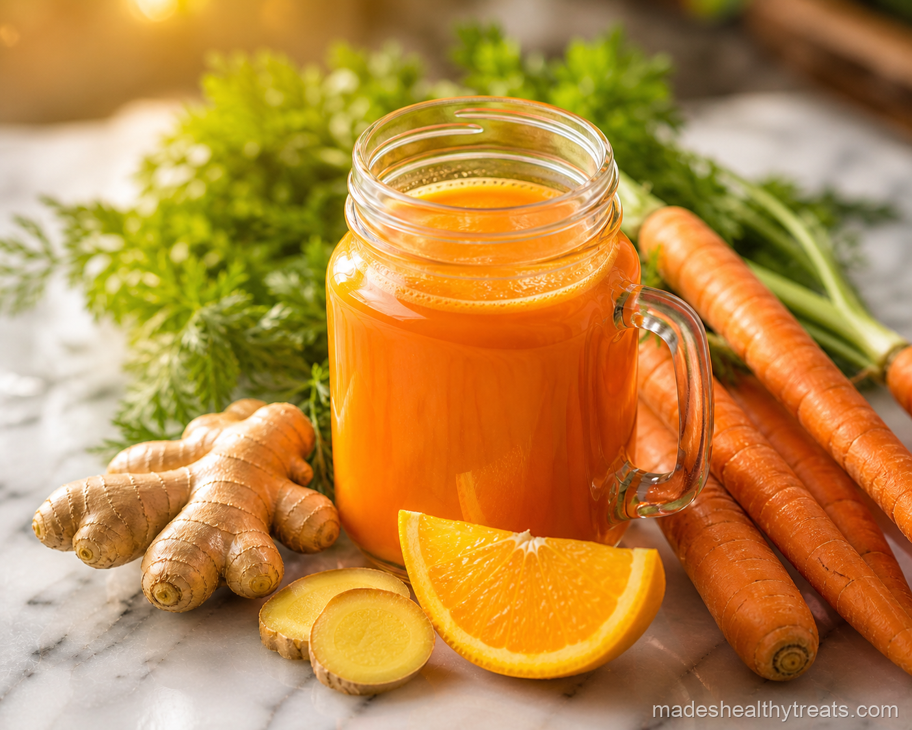

Why I Juice This One
I juice this one when I want to feel bright from the inside out. Carrots bring beta carotene, orange brings juicy vitamin C, and ginger makes the sweetness feel clean instead of heavy.
Turmeric gives the jar a warm earthiness that makes it feel like more than regular juice. I love that it tastes cheerful, but it also feels like I am giving my body something thoughtful.
Here's What You'll Need
You will need four large carrots, one peeled orange, one inch of fresh ginger, the juice of half a lemon, one half teaspoon of turmeric, and one cup of cold water.
How I Make It
I slice the carrots thinly so the blender does not have to fight them. Then I add the orange, ginger, lemon juice, turmeric, cold water, and the carrots, and I blend until the mixture looks smooth and deeply golden.
After blending, I strain it through a nut milk bag or fine mesh strainer over a bowl. I squeeze slowly because carrot pulp holds onto juice like it paid rent. Once strained, I pour it into a mason jar over ice and drink it while the ginger still tastes bright.
Made's Tips
If your carrots are very sweet, you may only need a small squeeze of lemon to balance the juice.
Fresh turmeric is beautiful here if you have it, but ground turmeric works when that is what my kitchen has.
I wash my strainer quickly after making this because turmeric likes to leave evidence.